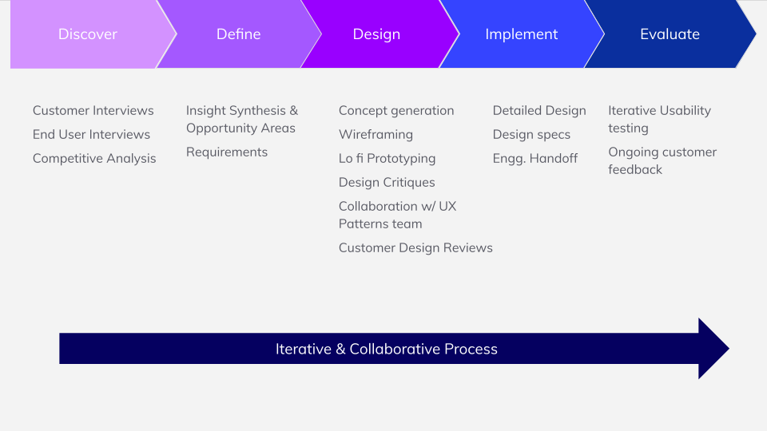
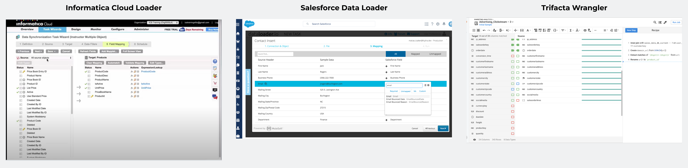
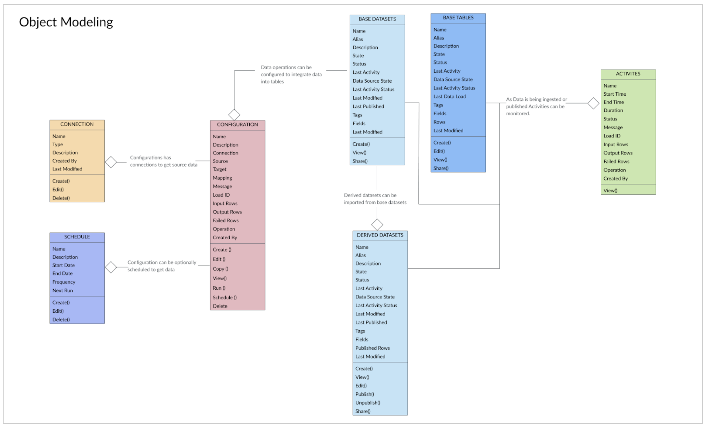

Data Integration Framework
Self Service Data Integration with Flexibility and Transparency
Background
Workday Prism Analytics is a data hub and analytics platform to acquire, prepare and store data for analysis. Existing data acquisition framework lacked flexibility, transparency and had performance issues. Customers were bringing in high volume and high frequency data which demanded a revamp of the current architecture for data containers.
Goals
Design the end-to-end experience for a self service data acquisition framework that will enhance data management capabilities by providing complete data transparency, data validation, powerful schema management, fine grained access control and monitoring
My Role
I lead the UX efforts in defining the strategy and roadmap for data integration experience. After the phase1 launch I moved into management. I hired and trained designers to work on the subsequent phases of the roadmap. My team co-led several customer workshops along with research team and provided design deliverables and worked with the scrum team until final launch.


We conducted a Design sprint with cross functional team members with the goal of understanding and provide better problem framing. We collected different ideas from the group and converged to create a high level concept designs.
We created concept designs to outline the flow for bringing in data with flexibility and provide a self service experience to our customer without relying on IT teams.
Our design efforts were broken down into creating experiences for 3 areas:
1. Ability for users to create a table from various sources
2. Users can bring in data from external sources to the table for various use cases such as deleting, updating, upserting etc.,
3. Create reusable connections and activity monitoring and integrate with the data catalog.


{kind=link}
We had to consider the overall system and how the new connection object will interact with other objects in the catalog. By providing a system view we communicated the behavior and interaction with other data catalog objects.
{kind=link}
Connections provides reusability and flexibility in configuration of various data sources.
Tables is the #1 strategic project and the future of much of the Workday Analytics Data platform and applications built on top of it. By providing a strong foundation and self service analytics features we improved the customer satisfaction and adoption of our product and platform.